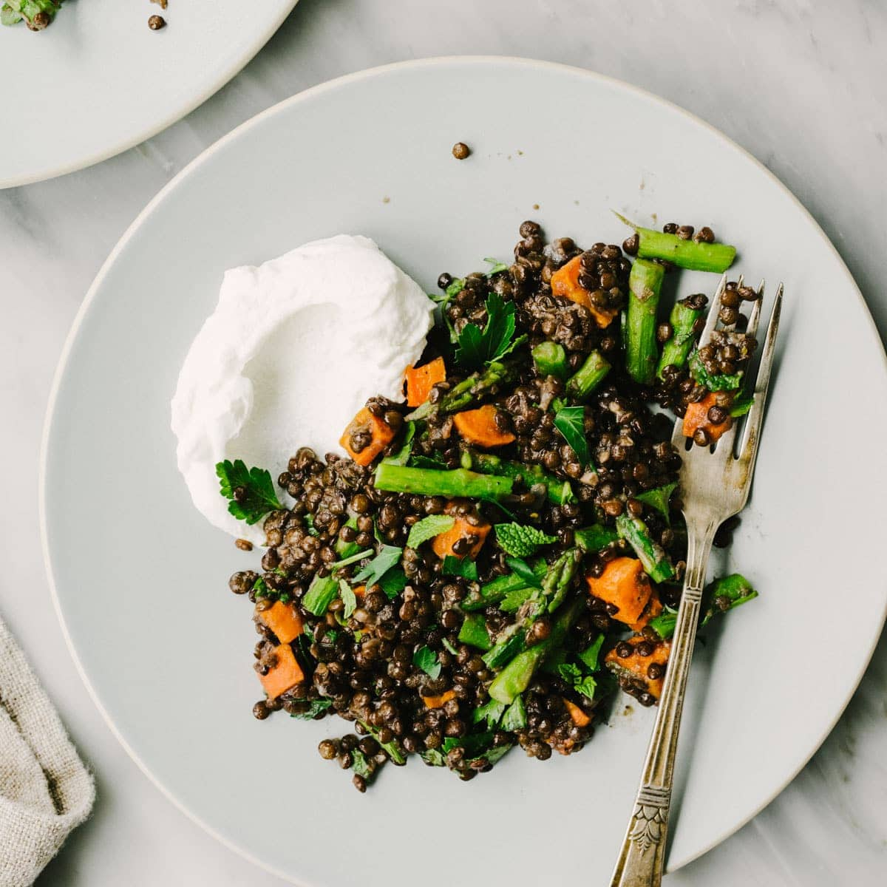

Caviar/Beluga Lentils

50+ g protein per cup
Ingredients
- Black caviar lentils (can sub beluga or French green lentils)
- Diced onion
- Vegan butter
Instructions:
- Preper the lentils with butter in the water
- When done, stir in carmelized onions
- Serve with a (unsweetened) vegan sour yogurt